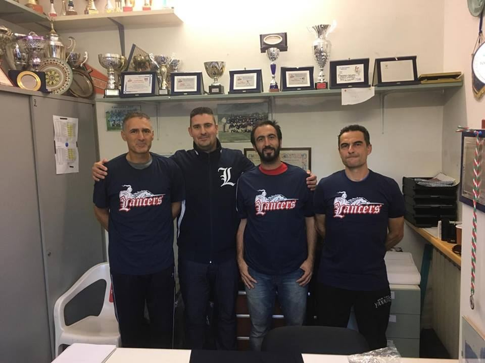
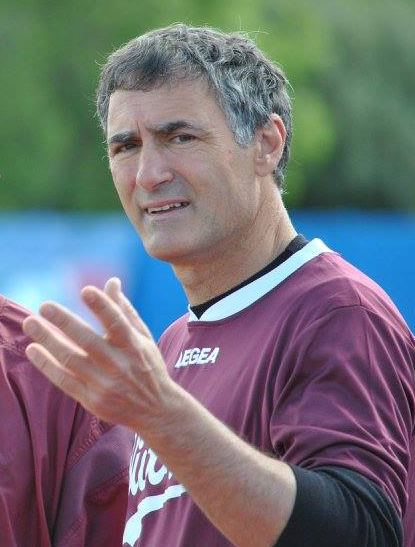
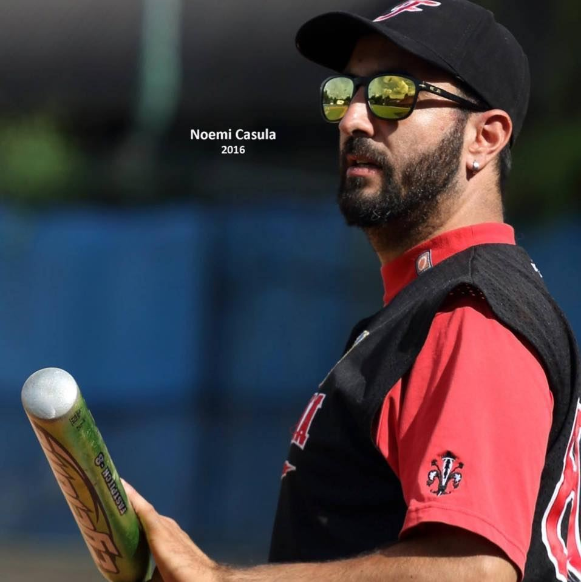

Il profumo dell’erba tagliata del diamante comincia a diventare un ricordo lontano, la stagione regolare infatti è terminata oramai da qualche settimana e presto potremo tracciare un bilancio di questa annata.
Si entra quindi nel vivo dell’off-season, il periodo invernale in cui si iniziano a muovere i primi tasselli per la prossima stagione, ci si muove anche in considerazione dei campionati che verranno strutturati dalla federazione.
Per quanto riguarda le giovanili si abbandoneranno le vecchie categorie (Ragazzi, Allievi e Cadetti) per far spazio alle nuove Under 12, Under 15 e Under 18.
In merito alla categoria Under 15 (ex allievi) la società ha scelto il nuovo staff per la prossima stagione che sarà composto dal manager Rosellini e dei coach Acciai e Barbieri.

Ringraziamo per il lavoro svolto Albano e Zalonici che li hanno preceduti in questi anni, lasciano ai nuovi tecnici una squadra forte e compatta che sicuramente darà delle soddisfazioni a tutto l’ambiente lastrigiano.
Andiamo a conoscere meglio il nuovo staff: Marco Rosellini è un tecnico di secondo livello che questa’anno si è fregiato del titolo Regionale Cadetti con il Livorno arrivando alla finale per il Titolo Nazionale. Ha giocato dal 1983 al 2005, tra Serie B, A2 e A1 principalmente con il Livorno ma anche con Chianti e Fiorentina nella ultime due stagioni.
Dal 1995 ha sempre collaborato con lo staff tecnico nella cura della battuta e degli esterni e nel 2015 è stato il manager della Selezione Toscana Cadetti.

Il giovane Marco Acciai è una vecchia conoscenza dei Lancers in quanto ha indossato la nostra maglia nella stagione 2004 con la formazione di Serie C2, in prestito dalla Fiorentina assieme ad altri atleti.
Negli ultimi anni Marco si è dato molto da fare come tecnico di squadre giovanili con buoni piazzamenti e formazioni di Serie C (Padule, Fiorentina e Cosmos), inoltre da due anni allena la squadra di Firenze di Baseball per ciechi con risultati eccellenti, scudetto 2015 e Coppa Italia 2016.
Ha vinto anche il premio come miglior manager BXC 2015, l’All Star BXC 2016 ed il torneo internazionale Mole Cup Pars nello stesso anno.
Alessandro Barbieri ha iniziato a giocare in età giovanissima come interno riuscendo a debuttare in Serie A1 con Livorno a soli 16 anni nel 1981.
Gli anni successivi ha disputato la Serie A2 fino al 1995 quando ha contribuito alla promozione nella massima categoria, nel 2000 si è accasato nel Chianti dove è rimasto per due stagioni.
In questa stagione ha collaborato come coach con Rosellini per il grande traguardo raggiunto con la categoria Cadetti del Livorno, negli anni passati si è invece occupato della prima squadra della stessa società.
Ieri, il DS Ciappi, ha presentato il nuovo staff alla squadra Under 15 e ai loro genitori suscitando entusiasmo e apprezzamenti; gli stessi genitori hanno ringraziato per il lavoro svolto i precedenti allenatori che resteranno comunque all’interno della società.
Speriamo che lo sforzo fatto dalla società possa portare ad un ulteriore miglioramento del nostro settore giovanile.